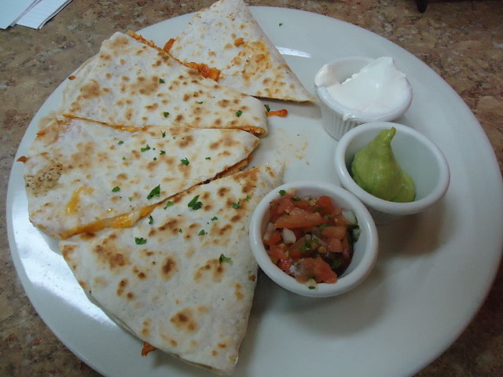

A simple quesadilla

This recipe is dead simple and is a staple at my home. If you want to make it nicer, feel free to add any ingredients you'd like in step 4.
Makes one serving.
Ingredients
- Two tortillas
- Grated Cheese
- A scoop each of salsa, sour cream, and guacamole.
Instructions
- Put the first tortilla in a large shallow pan, and turn the stove on medium until underside is golden or light brown.
- Set aside the frist tortilla (having only cooked one side), and do the same thing to the second tortilla.
- Flip the second tortilla and lower the heat.
- Put cheese onto the second tortilla, then place the first tortilla on top, making sure to put the golden or brown side down.
- Keep on heat until the cheese has melted enough to flip the quesadilla without making a mess.
- Flip the quesadilla, and keep it on heat long enough to melt the rest of the chease and gild the back of the tortilla.
- Place finished quesadilla on a plate, slice it into triangles, and scoop the salsa, sour cream, and guacamole onto it.
- Enjoy.
Back to the index